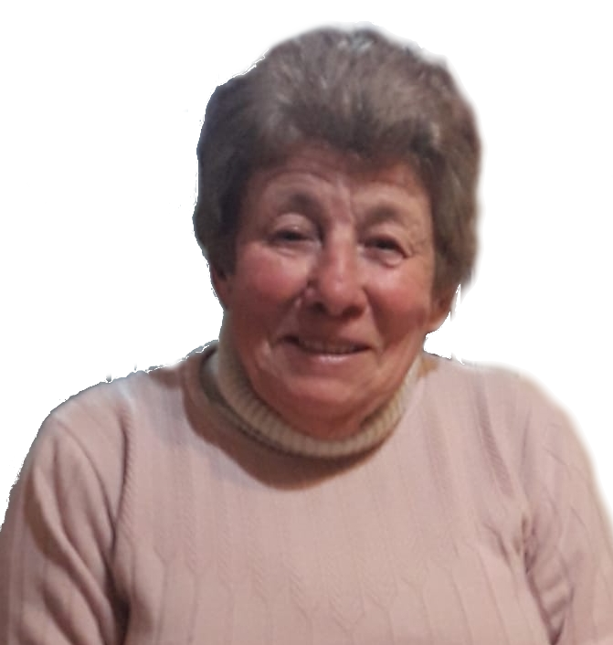
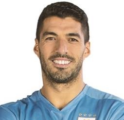

"IFSul me brindó una educación de calidad y oportunidades para desarrollar mis habilidades prácticas."
- Tereza Da Silva
"Gracias a IFSul, adquirí conocimientos relevantes y obtuve una sólida base para mi futuro profesional."
- Rodrigo Prieto

"La institución IFSul me proporcionó un entorno de aprendizaje inspirador y docentes comprometidos con mi éxito."
- Luis Suárez